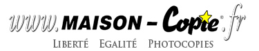

Plan d'accès/horaires
Créer un compte utilisateur
Faire un devis en ligne
Accueil
HORAIRES
Lundi et Mercredi:
9h15-12h30 / 14h-10h
Mardi, Jeudi, Vendredi:
9h15-19h (non stop)
Samedi:
14h-18h (fermé le matin)
La maison de la copie et du secrétariat
10 bis Av. Henri Fréville
35200 RENNES SUD